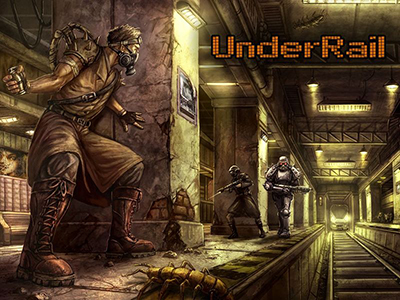

Description:
Underrail is a post-apocalyptic role-playing game focused on combat and exploration. It features turn-based combat, character customization, and an item crafting system.[1] The player controls a single character, whose development and interactions with the game world are the focus of the gameplay.[2] The game's ruleset is mainly inspired by the SPECIAL system from the Fallout series. It is a classless system with multiple levels of customization. Base ability scores determine a character's core potential, skills represent a character's linear progression in specific skills and feats can grant new abilities, provide passive bonuses or alter a character's existing abilities. The turn-based combat system is similar to Fallout's with more options added on top of it, such as the use of special abilities, psionics and more combat utilities. The system is intended to provide many combat options and unique playstyles.
